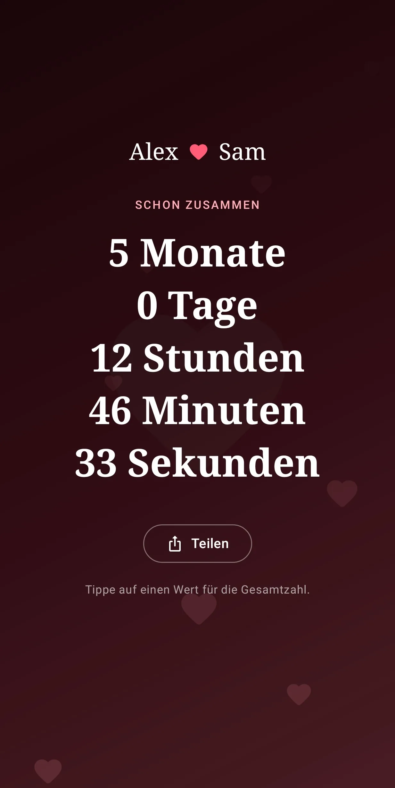
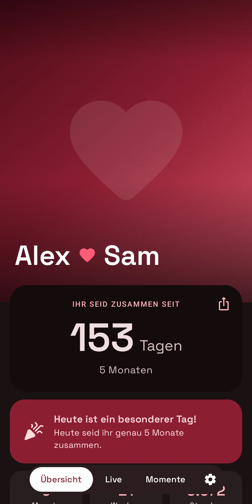
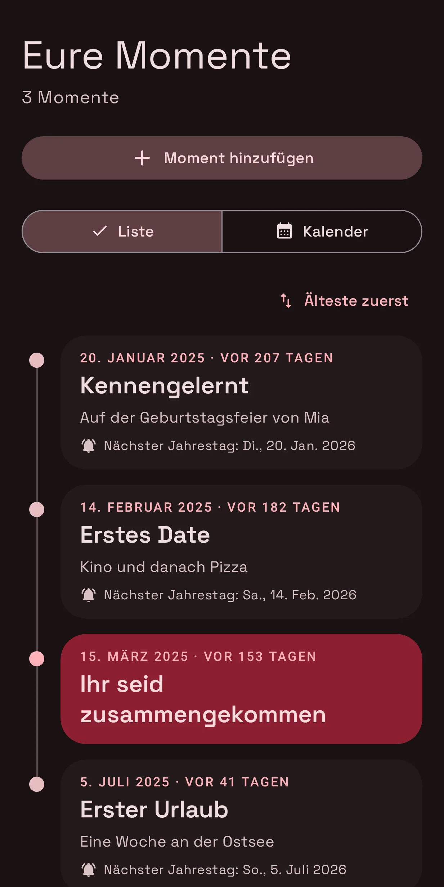
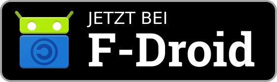

Open Source
Der ganze Code ist öffentlich. Alle können nachsehen, was die App macht.
Since Us zeigt, wie lange ihr schon zusammen seid, und erinnert euch an jeden besonderen Tag. Für alle, die sich lieben. Ohne Konto, ohne Werbung, kostenlos und Open Source.
Auch bei F-Droid. Google Play folgt bald, Tester:innen gesucht.


Since Us ist für alle, die sich lieben, egal wer ihr seid, wen ihr liebt und wie viele ihr seid. Queer, trans, poly oder nichts davon: Ihr seid hier willkommen.
Poly von Anfang an: beliebig viele Menschen und Beziehungen, jede mit eigenem Datum und eigenen Erinnerungen, ohne Aufpreis. Dazu geschlechtsneutrale Texte, Pronomen und Pride-Deko im Juni.
Gemacht von Lian (dey/deren), einer queeren, nichtbinären Person.
Der ganze Code ist öffentlich. Alle können nachsehen, was die App macht.
Keine Werbung, kein Abo, keine Premium-Version.
Kein Konto, kein Server, kein Tracking. Alles bleibt auf eurem Handy.
Keine Streaks, keine Punkte, kein Chat, keine KI.
Was Since Us ist (und was nicht, auf Englisch) · Roadmap (auf Englisch)
Alles, was ihr braucht, und nichts, was nervt.
Tage, Wochen und Stunden auf einen Blick, ein Live-Zähler bis zur Sekunde und lustige Zahlen wie eure gemeinsamen Vollmonde. Am Jahrestag gibt es Konfetti.
Erinnerungen an Jahrestage, Geburtstage, alle 100 Tage und euer halbes Leben zusammen. Bei Fernbeziehung zählt die App bis zum nächsten Treffen.
Wählt ein gemeinsames Bild und passt den Ausschnitt an. Mehrere Fotos werden zur Diashow.
Liebeskarte, Countdown, tägliche Erinnerung mit Foto oder ein kleiner Zähler für den Startbildschirm.
Hell und dunkel, viele Schriften, und die App spricht Deutsch, Englisch, Italienisch und Chinesisch.
Erstes Date, erster Kuss, erste Reise: mit Notiz und Fotos festhalten und jedes Jahr daran erinnert werden.
Sammelt die Momente, die euch wichtig sind, und werdet jedes Jahr daran erinnert.

Die Liebeskarte zeigt eure Namen, eure gemeinsamen Tage und wie weit es noch bis zum nächsten besonderen Tag ist. Die Größe lässt sich an den Platz neben euren anderen Widgets anpassen. Und wer lange auf das App-Icon drückt, legt direkt einen neuen Moment an.
Ein Tipp macht aus eurem Foto, euren Namen und euren gemeinsamen Tagen ein Bild für Status oder Story. Den Live-Zähler, einzelne Momente und euren Jahresrückblick am Jahrestag könnt ihr genauso teilen.
Kein Konto, keine Cloud, keine Werbung. Namen, Datum und Fotos bleiben auf eurem Handy. Sicherungen speichert ihr selbst, und um Momente mit dem Handy eures Menschen zu teilen, koppelt ihr beide Handys einmal per QR-Code.
Ganz ohne Programmieren. Jede Meldung und jede Idee wird gelesen.
Lieber per Mail? contact@sinceus.de. Bitte geht freundlich miteinander um, siehe Verhaltensregeln. Eine Sicherheitslücke gefunden? Bitte privat melden.
Wählt, woher ihr eure Updates bekommen wollt.
APK herunterladen. Die App meldet sich, wenn ein Update bereitsteht.
HerunterladenAlle Versionen und ÄnderungenDer Open-Source-App-Store, direkt aus dem Quellcode gebaut. Updates kommen über F-Droid.

Vor dem Start will Google, dass die App 14 Tage getestet wird. Lust zu helfen? Ihr braucht nur ein Android-Handy und ein Google-Konto.
Mittestencontact@sinceus.de